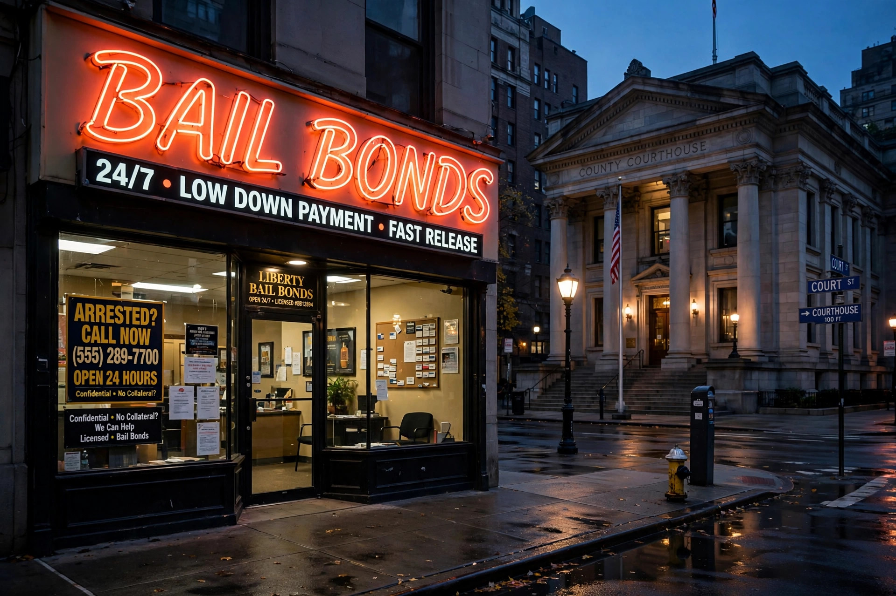

Bail bondsman
A bail bondsman, bail bond agent, or bond dealer is a person, agency, or corporation that acts as a surety and pledges money or property as bail for the appearance of a defendant in court. In exchange, the bondsman charges a fee, typically around ten percent of the total bail amount, which is not refunded.

How commercial bail works
When a court sets bail at an amount the defendant cannot pay, a bondsman may post a bond guaranteeing the full amount if the defendant fails to appear. The defendant or their family pays the bondsman a premium and often provides collateral. If the defendant appears as required, the bond is discharged; if not, the court forfeits the bond and the bondsman becomes responsible for the full sum.
Bounty hunters
To protect themselves against forfeiture, bondsmen may employ fugitive recovery agents, popularly known as bounty hunters, who are permitted in many US states to locate, arrest, and return defendants who have skipped bail. The broad powers of bondsmen and their agents derive in part from the Supreme Court's decision in Taylor v. Taintor (1872).
Geographic scope and criticism
Commercial bail bonding is largely confined to the United States and the Philippines; in most other countries the practice is illegal or unknown, and bail is handled directly between the accused and the court. Critics argue that money bail disadvantages poor defendants who remain jailed before trial because they cannot afford the premium, while supporters contend that bondsmen provide a cost-free supervision service to the state. Several US jurisdictions have restricted or abolished cash bail in recent years.
See also
Categories: Bail | Criminal procedure | Occupations in law enforcement